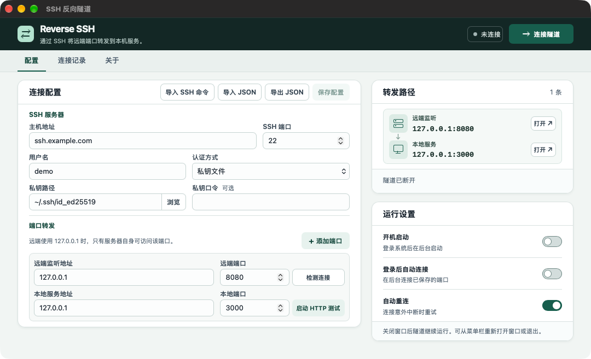

macOS 通用版
Apple 芯片与 Intel · macOS 13 及以上
下载 macOS ZIP
Apple 芯片与 Intel · macOS 13 及以上
下载 macOS ZIP64 位 Intel / AMD · Windows 10 / 11
下载 x64 ZIPArm 设备 · Windows 10 / 11
下载 ARM64 ZIP-R 命令，或用 JSON 导入、导出配置。127.0.0.1:8080
127.0.0.1:3000
在远端服务器上访问 8080，连接会转发到本机的 3000 端口。
macOS 将 Reverse SSH.app 拖到「应用程序」。Windows 解压后运行 Reverse SSH.exe。
选择私钥、密码或 SSH Agent，填写远端监听和本机服务地址。SSH 服务端须允许远程 TCP 转发。
点击「连接隧道」。首次连接请核对服务器指纹，连接成功后即可访问远端监听端口。
Windows 内嵌窗口使用 WebView2 Runtime。内嵌界面无法启动时，可使用默认浏览器管理隧道。